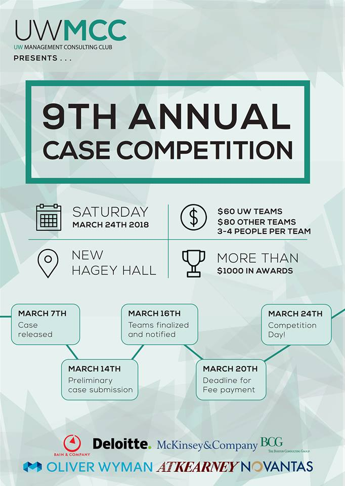
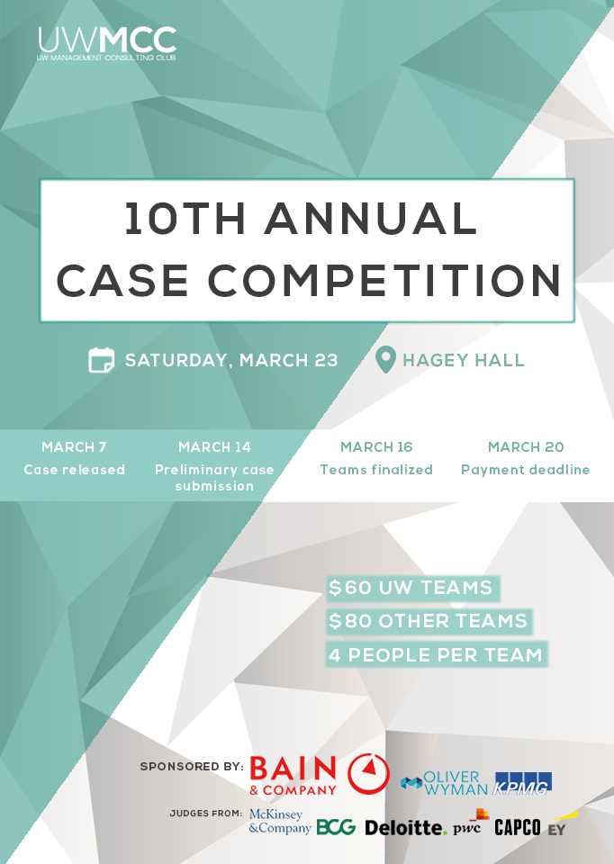

Annual Case Competition
UWMCC holds an annual case competition where students from all universities can compete. Winter 2018 was my first term on the team, as a marketing director I provided feedback for designs and helped to promote events on social media.
In Winter 2019, I was VP Marketing where I was responsible for creating all graphic deliverables. Following the branding guide and using the previous year’s graphic for reference, I used Photoshop and Illustrator to create the following graphics.
Countdown social media posts
A simple countdown graphic to help promote on social media and increase engagement. To determine what content to include, I surveyed and asked a few friends for their opinion. The majority agreed that keeping it as simple as possible and including the attending firms were most important.


Nametags
We thought designing different name tags was the best method for attendants to distinguish between themselves. Judges had a fancy geometric background and unique layout whereas team members and delegates had the same layout but opposite color scheme. So team members could be found with ease, their nametags had a teal background to stand out.
Taking into consideration of survey answers I resized the poster to create a Facebook page banner.